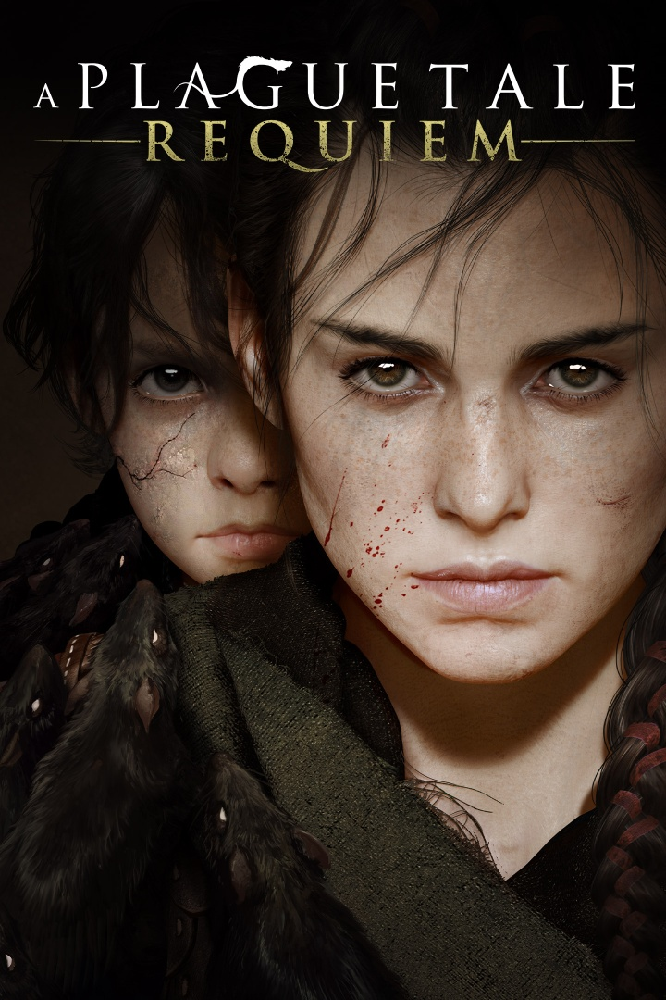
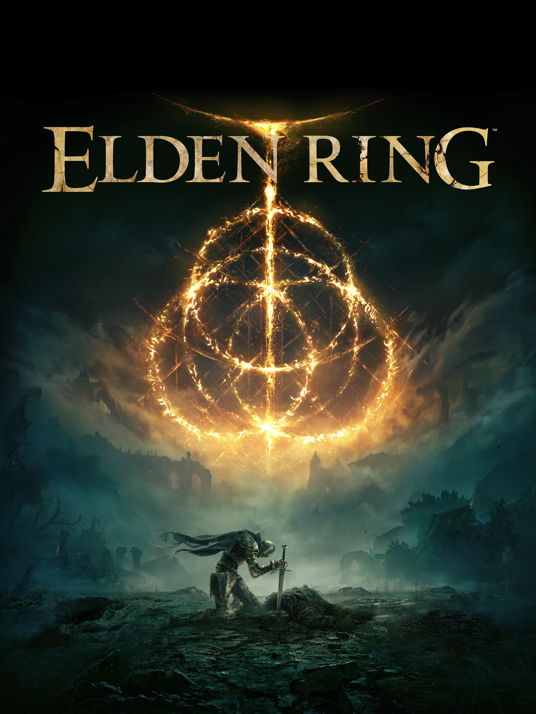
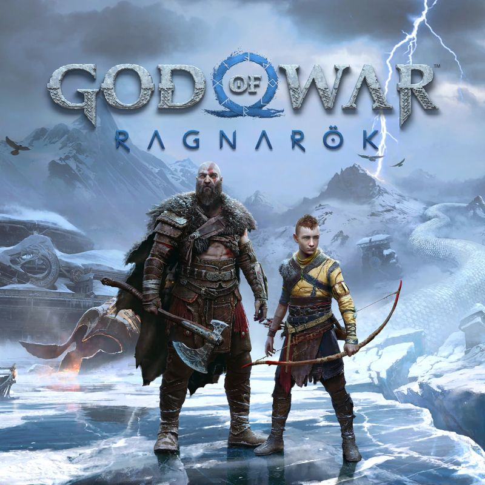
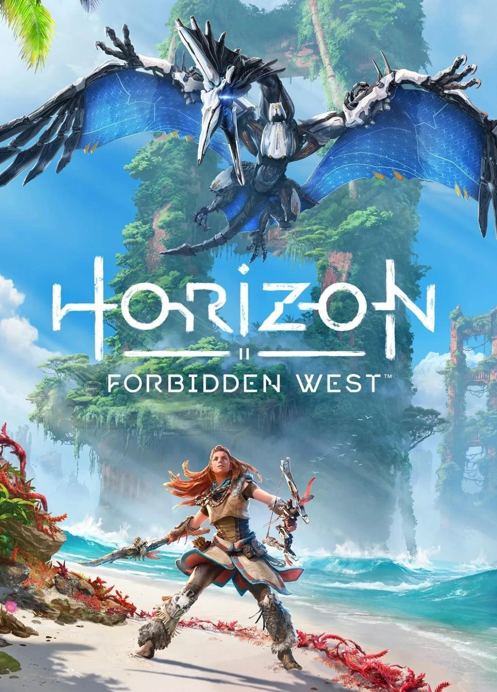
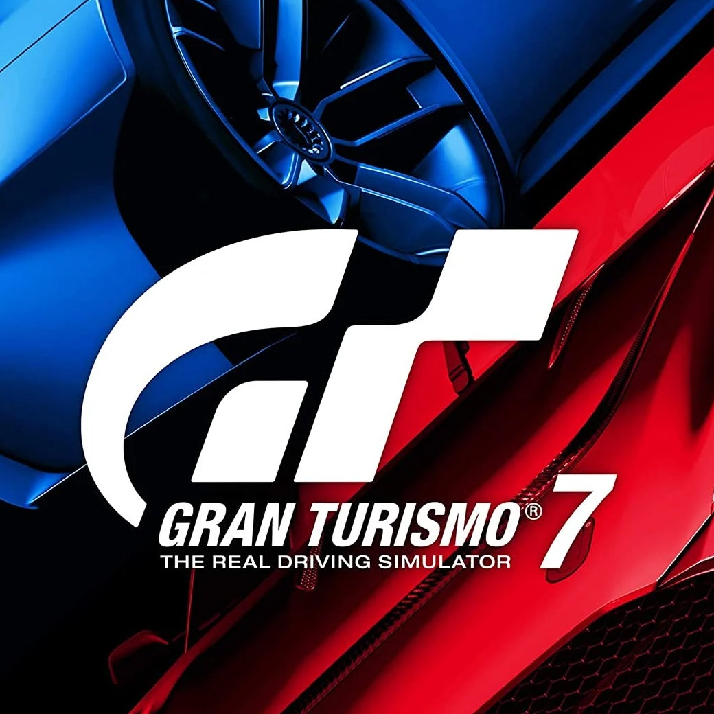

A Plague Tale: Requiem
Developer(s): Asobo Studio
Publisher(s): Focus Entertainment
Director(s): Kevin Choteau
Producer(s): Eric Chort
Writer(s): Sébastien Renard
Composer(s): Olivier Deriviere
Series: A Plague Tale
Platform(s): Nintendo Switch, PlayStation 5, Windows, Xbox Series X/S
Release: October 18, 2022
Genre(s): Action-adventure, stealth
Mode(s): Single-player
Elden Ring
Developer(s): FromSoftware
Publisher(s): Bandai Namco Entertainment, JP: FromSoftware
Director(s): Hidetaka Miyazaki
Producer(s): Yuzo Kojima
Writer(s): Hidetaka Miyazaki, George R. R. Martin (from Game of Thrones)
Composer(s): Tsukasa Saitoh, Shoi Miyazawa, Tai Tomisawa, Yuka Kitamura, Yoshimi Kudo
Platform(s): PlayStation 4, PlayStation 5, Windows, Xbox One, Xbox Series X/S
Release: February 25, 2022
Genre(s): Action role-playing
Mode(s): Single-player, multiplayer
God of War Ragnarök
Developer(s): Santa Monica Studio
Publisher(s): Sony Interactive Entertainment
Director(s): Eric Williams, Cory Barlog
Producer(s): Chad Cox
Writer(s): Matt Sophos, Richard Zangrande Gaubert
Composer(s): Bear McCreary
Series: God of War
Platform(s): PlayStation 4, PlayStation 5
Release: November 9, 2022
Genre(s): Action-adventure, hack and slash
Mode(s): Single-player
Horizon Forbidden West
Developer(s): Guerrilla Games
Publisher(s): Sony Interactive Entertainment
Director(s): Mathijs de Jonge
Producer(s): Joel Eschler
Writer(s): Ben McCaw
Composer(s): Joris de Man, Niels van der Leest, Oleksa Lozowchuk, The Flight
Series: Horizon
Engine: Decima
Platform(s): PlayStation 4, PlayStation 5, Windows
Release: February 18, 2022
Genre(s): Action role-playing
Mode(s): Single-player
Gran Turismo 7
Developer(s): Polyphony Digital
Publisher(s): Sony Interactive Entertainment
Director(s): Kazunori Yamauchi
Series: Gran Turismo
Platform(s): PlayStation 4, PlayStation 5
Release: March 4, 2022
Genre(s): Racing simulation
Mode(s): Single-player, Multiplayer